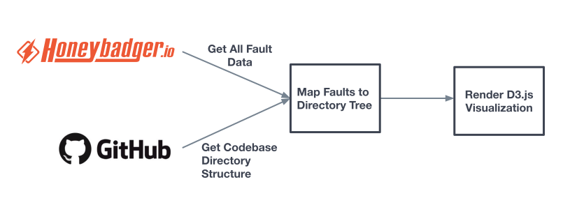
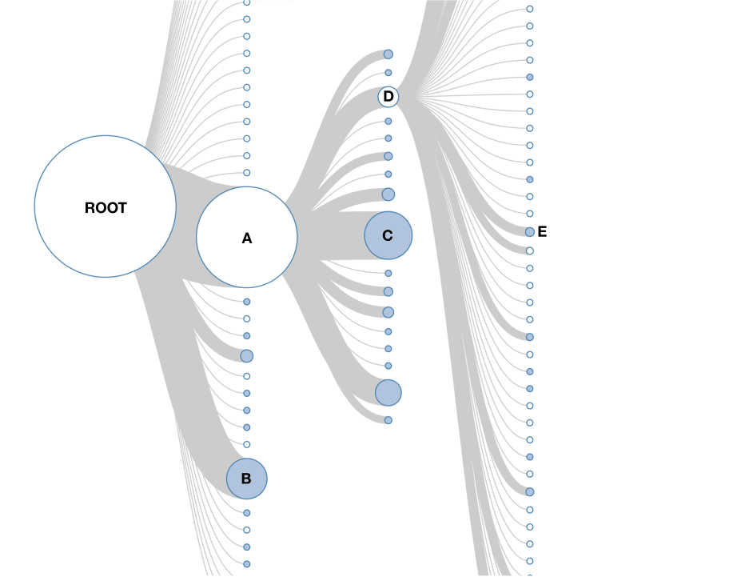
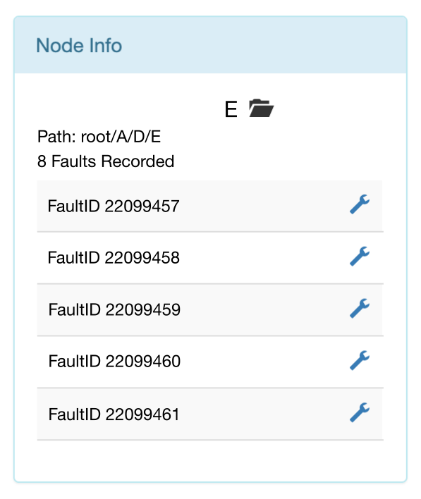
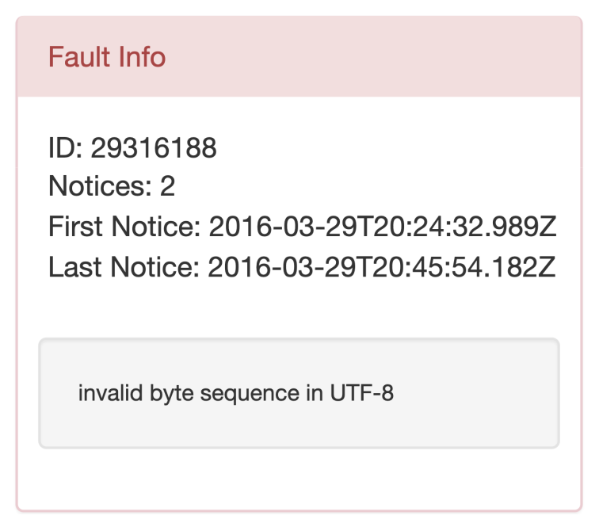

March 2016
I designed, proposed and built a DevOps engineering tool at UserTesting in Mountain View, CA that mapped faults occuring in the live codebase to a visual representation of the codebase directory tree. This would allow engineers on the team to easily identify and track areas of the codebase that were more susceptible to faults. 
This process involved cloning the codebase repository from GitHub and writing a script to infer a tree representing the codebase where the root directory is the root of the tree, directories are nodes with children that are both directories and files, and files are leaves in the tree. Another script would query the latest fault information from the Honeybadger.io platform which had already been integrated into the app. From this data, faults would be mapped to their corresponding location in the codebase directory tree producing a JSON object which would then be rendered with D3.js. In particular, I modified Rob Schmuecker's collapsible tree code.
Below is a screenshot of the visualizer. Blue circles represent "collapsed" folders; their contents are not shown. White circles represent files and "expanded" folders that show their contents. Edge thickness between parent and child nodes represent the number of faults recorded in files that descend from the child nodes. Since all files descend from the root, its outgoing edges must be the thickest. Edges that are one pixel thick represent 0 faults contributed down that path.
In the example, we see that the directory A is particularly vulnerable to faults, where A's subdirectories C and D are two significant contributors. By expanding directory D we see that it has many children, several of which are causing faults.
It should be noted that in the actual visualizer, nodes can be clicked on to expand or collapse their contents. This is necessary since enterprise codebases are massive and would likely correspond to tree withs large degree and height. Furthermore, only the first few levels from the root need to be expanded to identify areas high fault vulnerability.
When nodes are clicked on, a table appears giving more detail about the faults.
In the table above we see that folder E has had 8 faults in its descendant files. The wrench icon links the user back to the Honeybadger.io page containing more detail about each fault.
Individual fault ID's can also be clicked on, revealing a window like the one below.
The window shows the number of occurrences, time of first and last occurrence, and a snippet of the error itself.